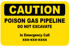

PIPELINE TRANSPORTATION
In North America, hazardous materials are transported through millions of miles of underground pipelines and related structures that can contain natural gas, natural gas liquids, crude oil, gasoline, diesel fuel, anhydrous ammonia, carbon dioxide, jet fuel and other commodities. Although pipelines are buried, there are above-ground structures and signs indicating the presence of
Gas Pipelines
Natural Gas Transmission Pipelines
Large-diameter, steel pipelines transporting flammable, toxic and non-toxic natural gas at very high pressure.
Structures: Compressor Station Buildings, Valves, Metering Stations, and Aerial Patrol Markers.
Markers: “Warning, Caution, or Danger” appear at road, railroad, and water crossings, or may be posted at property boundaries and include operator’s emergency Point-of-Contact (POC) and product transported.

Natural Gas Distribution Pipelines
Natural gas is delivered directly to customers via distribution pipelines--typically smaller- diameter, lower-pressure pipelines, and can be steel, plastic, or cast iron.
Structures: Regulator stations, customer meters and regulators, and valve box covers are the only above-ground indicators of gas distribution pipelines.
Gas Gathering and Gas Well Production Pipelines
Gas gathering/gas well production pipelines collect “raw” natural gas from wellheads and transport product to gas-processing and/or gas-treating plants. These gathering pipelines carry natural gas mixed with some level of gas liquids, water and, in some areas, contaminants such as hydrogen sulfide (H2S).
Structures – Compressor Station Buildings, Valves, Metering Stations, and Aerial Patrol Markers.
Markers – Often appear at road, railroad, and water crossings. Signs may be posted at property boundaries. Signs include operator’s POC and product transported. Warning, Caution, or Danger will appear on signs.
Note: Pipelines transporting natural gas containing dangerous levels of H2S may have signs that say: “Sour Gas” or “Poison Gas”.
Two important things to remember:
SIGNS OF GAS PIPELINE RUPTURE:
Follow these steps:
ANY ONE OF THESE COULD INDICATE A SUSPECTED GAS PIPELINE LEAK:
Follow these steps:
Considerations for Establishing Protective Action Distance:
If you know the material involved, identify the three-digit guide number by looking up the name in the alphabetical list (blue-bordered pages), then using the three-digit guide number, consult the recommendations in the assigned guide.